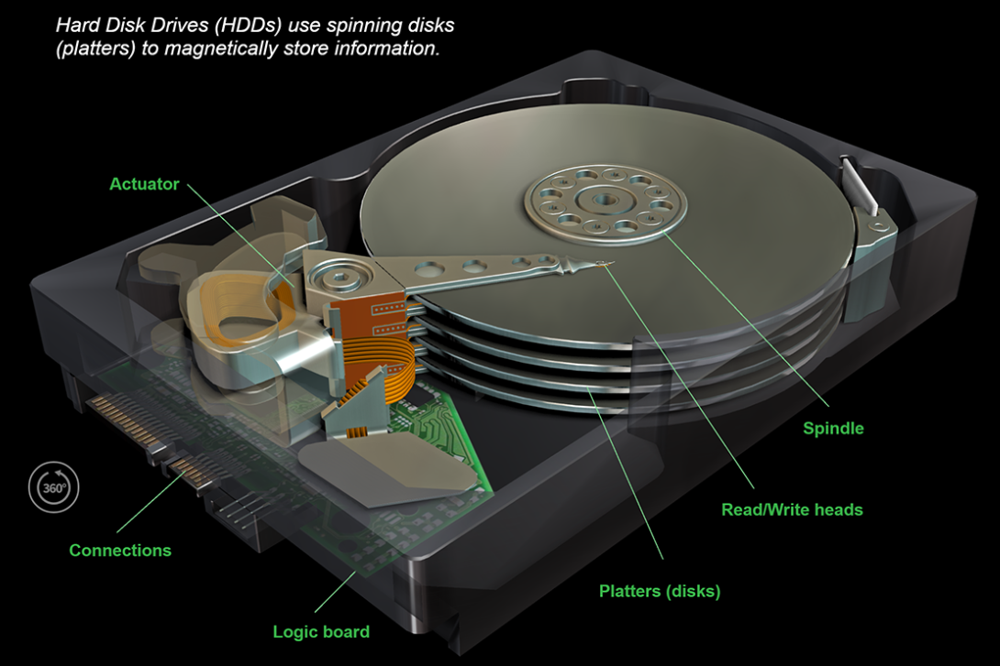
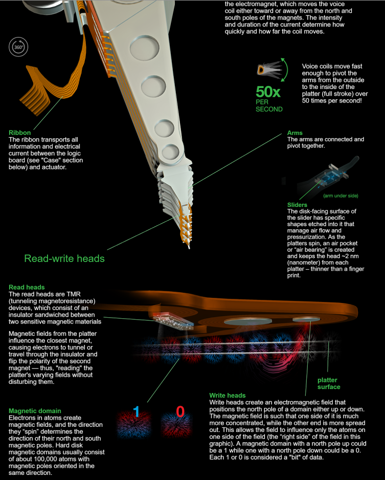

Básicamente, el disco duro está integrado por un conjunto de discos de igual diámetro, comúnmente denominados platos. Cada plato se compone de un sustrato de elevada rigidez, que se recubre con un material magnetizable. El nombre de disco duro proviene, precisamente, del alto grado de rigidez de los platos (en oposición a lo que ocurría con los discos flexibles).
Los platos se hallan montados sobre un eje, y se mantiene una cierta distancia entre ellos, gracias a unos anillos separadores. El número usual de platos oscila entre 1 y 4 en discos duros normales. El eje se halla gobernado por un motor giratorio. Cuando el motor gira, el eje gira, y por tanto todos los platos giran a la misma velocidad.
Los elementos encargados de leer y escribir la información se denominan cabezales de lectura y escritura. Estos se encargan de convertir bits en pulsos magnéticos (al escribir) o bien pulsos magnéticos en bits (al leer). Hay dos cabezales dedicados a cada plato. Uno de ellos se sitúa en la parte superior, mientras que el otro se sitúa en la cara inferior. De esta forma es posible acceder a ambas caras de cada plato.
Como ya hemos indicado antes, los cabezales no tocan la superficie de los platos. Esta “flotabilidad” permite que el disco gire a mayor velocidad, generando menos calor y produciendo menos nivel de ruido. Mayor velocidad de giro significa menor tiempo de acceso a la información, y por tanto mayor velocidad de trabajo.
Conviene lograr que los cabezales se encuentren a una distancia óptima de los platos. Dicha distancia está relacionada con la potencia de las señales emitidas por los cabezales y por el disco. Si se trabaja con señales suaves, los cabezales deberían estar cerca de los platos.
En otro caso, las señales no se recibirían correctamente por los cabezales al leer, ni quedarían bien registradas en los platos al escribir. En el lado opuesto, si se trabaja con señales fuertes, los cabezales deberían estar más alejados de los platos. La potencia de las señales está altamente condicionada por la densidad de la información. A mayor densidad, los bits se hallan más cercanos entre sí en los platos, y por tanto se requieren señales más suaves para evitar interferencias. Por ello, se deduce que a mayor densidad superficial, es necesaria una menor distancia entre cabezales y platos.
Los cabezales de lectura y escritura se montan sobre unos elementos denominados deslizadores. Cuando el disco gira, el flujo de aire desprendido hace que los deslizadores se desplacen, colocando a los cabezales a la distancia apropiada.
Los deslizadores se montan sobre unos elementos rígidos denominados brazos. Los brazos se unen a un eje, controlado por un motor paso a paso. Por tanto, los brazos se mueven solidarios. Esto significa que todos los cabezales siempre se moverán en conjunto, encontrándose siempre uno encima del otro. Los elementos internos del disco duro se gobiernan mediante un circuito controlador, que además se encarga de comunicar al disco duro con el resto del PC. El actuador es el que mueve los brazos trazando un arco para seleccionar la pista adecuada, a continuación el disco gira para acceder a sectores específicos de esa pista.
